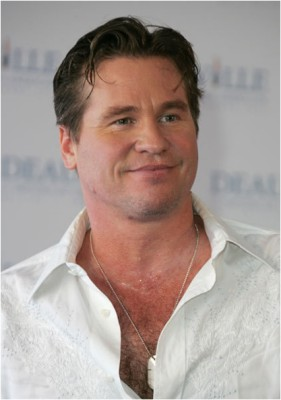
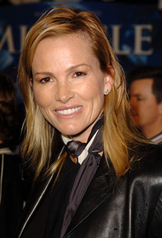
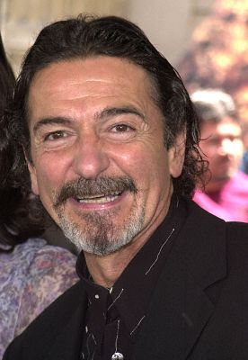
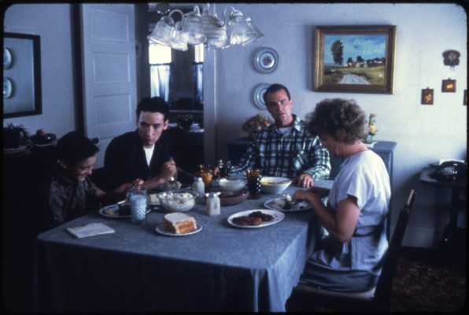

#11523 Palo Alto

 IMDB-Wertung: 6.2 / 10
IMDB-Wertung: 6.2 / 10  Metascore: 69
Metascore: 69 
In der kalifornischen Kleinstadt Palo Alto kreuzen sich die Wege mehrerer Schüler eine Highschool: Die schüchterne April verliebt sich zum Missfallen der Mitspielerinnen in ihren Fußballtrainer Mr. B, dessen Kind die Schülerin auch öfters als Babysitter betreut. Gleichzeitig ist der introvertierte Kiffer Teddy in April verliebt, schafft es aber nicht, ihr seine Zuneigung zu gestehen. Teddys bester Freund Fred versucht derweil, der gutbürgerlichen Routine seines Elternhauses zu entkommen, indem er sich immer wieder mit dem Gesetz anlegt und seine nymphomanische Mitschülerin Emily sexuell befriedigt. Als es zwischen April und Mr. B tatsächlich zu einer Affäre kommt, hat das zerstörerische Auswirkungen auf das lose Beziehungsgeflecht im Mikrokosmos der Schule.
Jahr: 2013
Dauer: 99 Minuten
FSK: 16
Land: USA Studio: Tribeca FilmTonspuren: DTS - ,
Untertitel: Deutsch,
Auflösung: 1080p (1920x1040) Größe: 6174 MB
Genre: Drama
Regisseur: Gia Coppola
Drehbuch: Gia Coppola, James Franco
Soundtrack: Blood Orange, Robert Schwartzman
Darsteller:
- Jack Kilmer als Teddy
 Nat Wolff als Fred
Nat Wolff als Fred Emma Roberts als April
Emma Roberts als April- Olivia Crocicchia als Chrissy
- Claudia Levy als Shauna
 James Franco als Mr. B
James Franco als Mr. B-  Val Kilmer als Stewart
- Andrew Lutheran als Ivan
- Bo Mitchell als Jack O
- Zoe Levin als Emily
- Brennen Taylor als Luke
- Colleen Camp als Sally
- Anna Thea Bogdanovich als Sally's Friend
- Timothy Starks als Police Officer
- Micah Nelson als Michael
-  Janet Jones als Sherry
- Jake Nordwind als Art Student #1
-  Don Novello als Mr. Wilson
-  Marshall Bell als Jake
- Laney Fichera als Judy
- Chris Messina als Mitch
 Nathalie Love als Joy
Nathalie Love als Joy- Christian Madsen als Anthony
- Sandra Seacat als Tanya
- Janet Song als Mrs. Stevenson
- Talia Shire als Mrs. Ganem
- Margaret Qualley als Raquel
- Amelia Burstyn als Mary
- Keegan Allen als Skull
- Francis Ford Coppola als The Judge (uncredited)
- Sam Dillon als Brian (uncredited)
- Viktoriya Dov als Student (uncredited)
 Neil Fleischer als Ogden (uncredited)
Neil Fleischer als Ogden (uncredited)- Jacqui Getty als Jane
- Bailey Coppola als Seth
- Atlanta Decadenet als Girl at Party
- Emma Gretzky als Emma
- Genevieve Penn als Court Clerk Woman
- Jesse Jo Stark als Pam
- Jamal Hammadi als Art Student #2
- Greta Seacat als Janice
- Jessica Elle Taylor als Brittney
- Janet Salter als Elderly Woman
- Grear Patterson als College Boy #1
- Nick Stewart als College Boy #2
- Courtney Falsey als Reality Show Girl #2 (uncredited)
Datei: X:\NEU\Palo Alto (2013, FSK16, 1920x1040).mkv seit 22.07.2019
 Es gibt insgesamt 187 Filme in der Gruppe 'NEU'
Es gibt insgesamt 187 Filme in der Gruppe 'NEU'